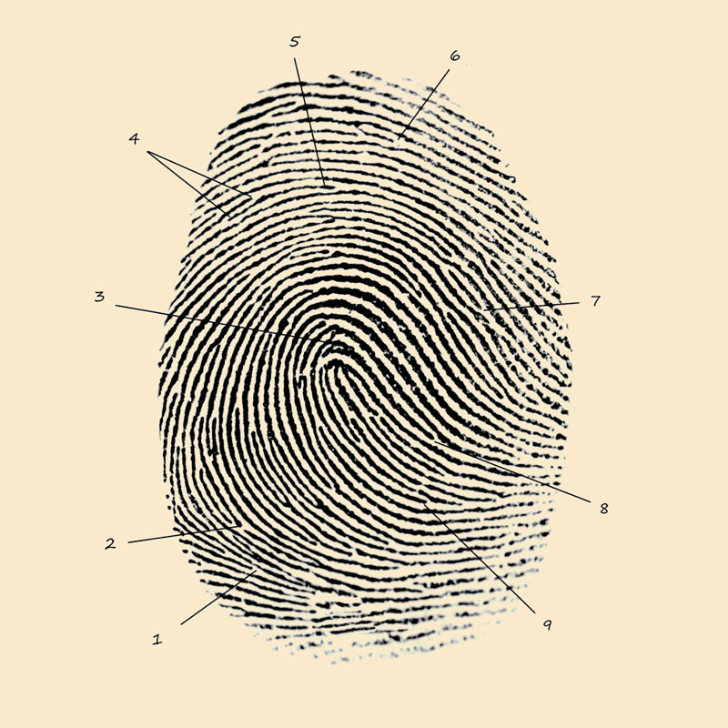
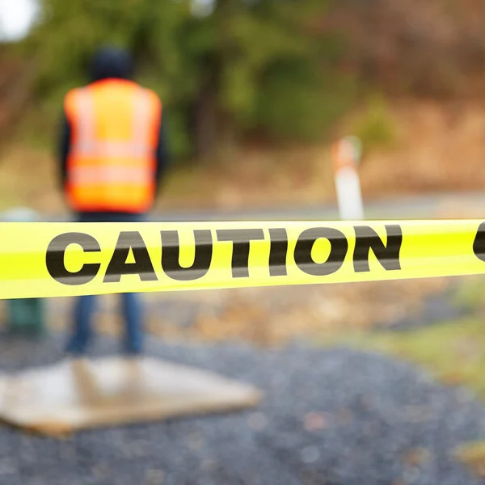

Welcome to my website on True Crime!
I have always had a fascination with crime stories and podcasts, and in this website, I aim to explore some of the most famous true crime cases in America and keep expanding on current cases!
Zodiac Killer
The Zodiac Killer was an unidentified serial killer from Northern California during the 1960s. He typically targeted couples, and their cases have been noted as "arguably the most famous unsolved murder case in American history". The first well-known murder, the “Lake Herman Road Murders” committed by him, took place in Benicia, California, where he shot a couple who were parked on the side of the road multiple times. Shooting them each 6 times, police estimate the attack only took 3-5 minutes. Similar murders took place afterward, and 5 instances of this occurred in the following year. Following these crimes, the Zodiac killer sent letters to the police from 1969 to 1974. These often started with "This is the Zodiac speaking" and were signed with a symbol resembling the crosshairs of a gun. As well as letters, he sent cryptograms which supposedly revealed his identity. However, till this day, nobody knows who the Zodiac killer is.
Black Dahlia Murders
The Black Dahlia murders have often been known as one of the most famous unsolved crime cases in the United States. Elizabeth Short, an aspiring actress, also known as the Black Dahlia, was murdered on January 15th, 1947, in Los Angeles, California. Her death is known to be one of the most gruesome in American history, as her corpse was found severed at the waist, mutilated, and completely drained of blood leaving her body pale white. However, at her autopsy, it was noted that many of the mutilations were done in a way where only a medical professional with training would have had access to learning. After a letter was sent to the police containing her birth certificate, business cards, photos, and a phone book, police started to investigate hundreds to see who could potentially be her killer. Although no killer has officially been named, George Hodel, her physician, was the main suspect. With the medical training needed to mutilate the body, and previous arrest charges of rape, even his own children believed he was responsible.
 